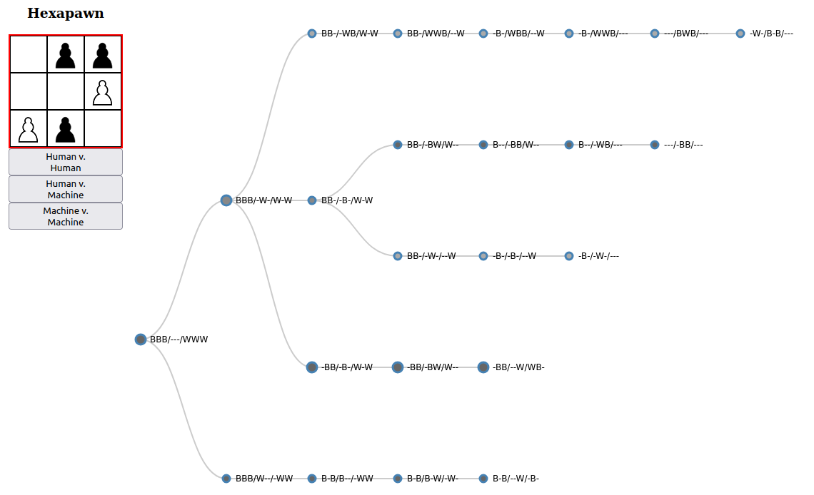

Data Projects
Data ProjectsHexapawn
Problem
Analyze the game of Hexapawn. How can a machine be programmed to improve in performance at playing Hexapawn?
Resources
Overview
Hexapawn is a tiny chess variant, written about by Martin Gardner as an example of "how to build a game-learning machine and then teach it to play and to win". A full game can be played in about a minute, so that many games can be played and students can make observations, look for patterns, and develop strategies.
White moves first. A piece can either move forward if the space in front of it is empty, or capture an opponent's piece diagonally.

A player wins when:
- One of their pawns reaches the other side
- They capture all of their opponent's pieces
- It is their opponent's turn and there is no legal move
Students first familiarize with the rules and play several games. The handout prompts them through an analysis of the game.

In the image above, the board on the left depicts a completed game where black has won by reaching the other side (bottom middle piece). On the right is a game tree representing five games that have been played. As more games are played, the nodes (circles) in the tree will change color corresponding to which side tends to win from that position. Using this information, a human or an algorithm can determine the best path to take. The more games that get played, the more information there is to make a calculated decision!